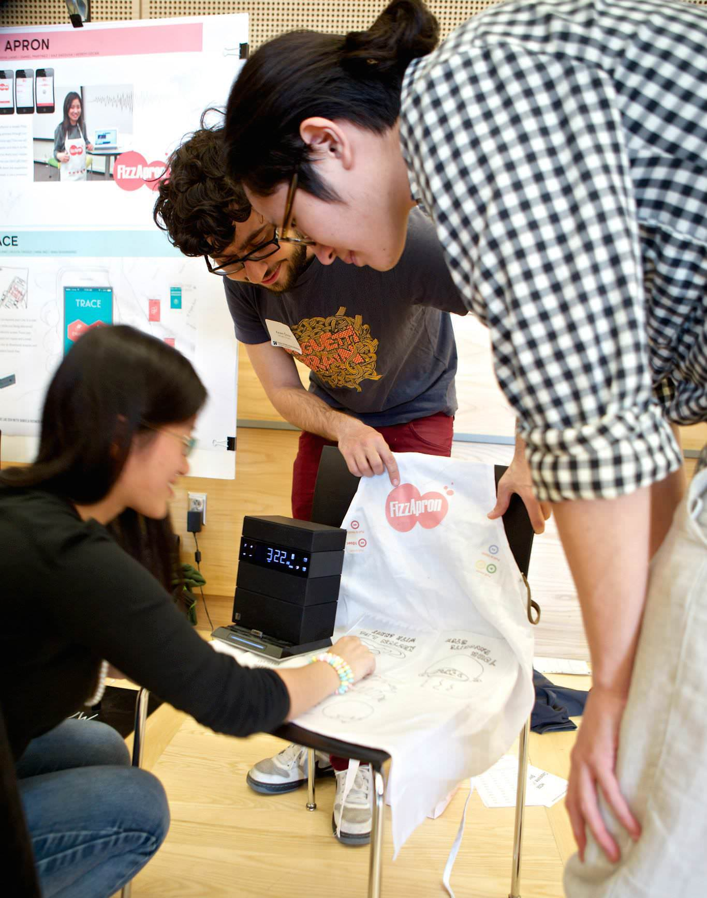
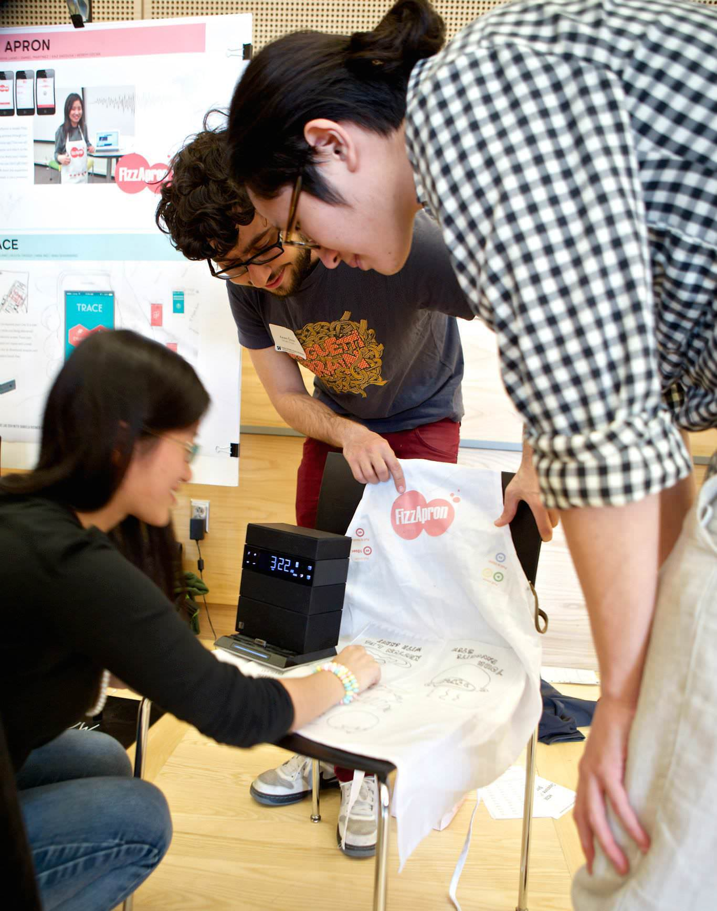

Fizz apron is a smart apron that allow you to share your valuable recipes with your loved ones as if you are right next to them.
Fizz apron is a smart apron that allow you to share your valuable recipes with your loved ones as if you are right next to them.
3 Months, One Credit Course Project, Jun, 2014
Kerem Ozcan, Muchen Feng, Daniel Martinez V, Kaz Hidekazu
Physical Prototype, Electronic Prototype, User Research
Blog Post, Mobile Prototype, Arduino Prototype
FizzApron is a smart apron, with which you can share your valuable recipes with your loved ones as if you are right next to them. They will listen to the recipes from your own voice and you will receive and SMS or e-mail when they finish listening one of your recordings.
Getting your FizzApron is simple: First, record your cooking process through our website or smartphone app. Then we will embed it to your FizzApron and ship it to the person you would like to share your recipes with. With FizzApron, you don't gift them your recipes, you gift them the experience of preparing meals in your presence!
We've also created prototypes for our website and mobile application, here you can get a taste of how it would look like:
(You can get access to our interactive prototyep through here)
By offering the real-time cooking companion experience, we are hoping to connect the users with their love one throungh long distance. We've all experienced separation with our friends and families, and the familar food always give you comfort when missing them.
With embeded speakers on the apron, cooking with Fizz Apron feels like your love ones are standing right next to you. Users are no longer reading recipes from cold and static books. And the apron is alway on you no matter where you go, you can easily control the recipe without staining anything.
In the first round of prototyping, we created a low fidelity to test out the look and feel and the interaction with the apron.
This first iteration was mostly a proof of concept to really distilled the main interactions for the higher fidelity prototype.


With the initial prototype in hand, we tested this prototype with two groups of users. One of them recorded the recipe, and the other recreated with our apron prototype. We gained valuable insights from the testing, and improved our prototype with these findings. For more detail of the user testing, please visit our blog here.
Based on the insights we received from the user testing, we made a few changes on our prototype. We relocated the control string to make it easier to grab, added fast forward and fast rewind functions to the controls.
 

Copyright © 2014 Shiya Liang. All Rights Reserved.